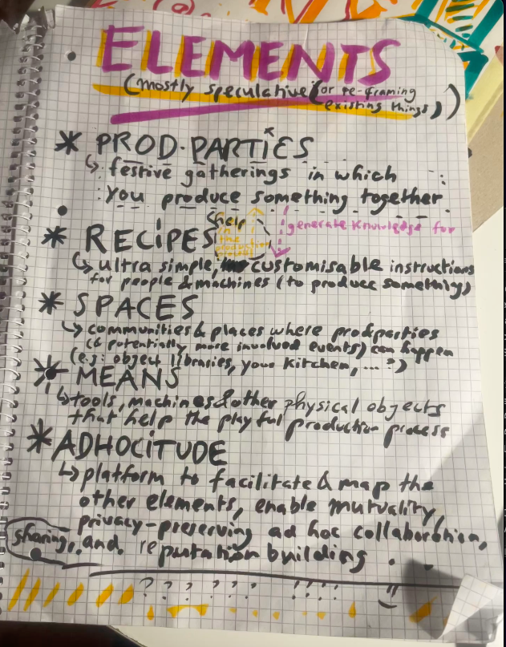
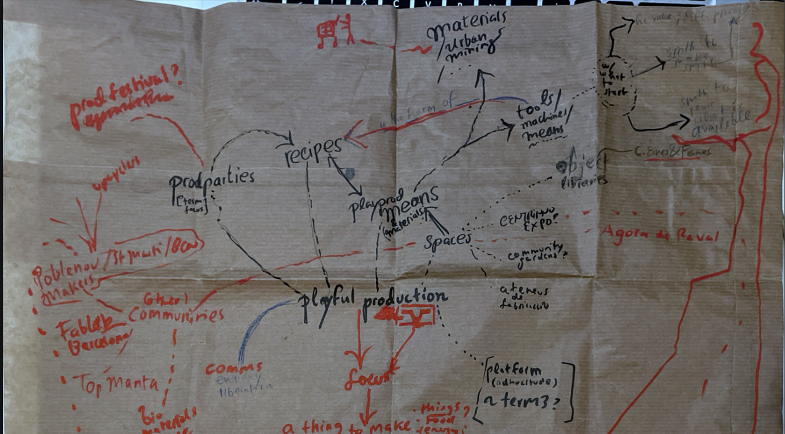

Design studio class term 2¶
“Trying the same thing over and over again” -me, explaining how I’m able to achieve anything at all; or an apocryphal Einstein defining insanity
As the trimester starts, planning and imagining¶
At the start of the trimester, we were asked to engage in sort of planning exercise. Here is what I came up with:
three learnings (relevant for how to proceed)¶
We were asked to briefly present three learnings we took from our work in term 1. Here are mine:
- focus: in order to move from macro scale imagination to concrete ‘interventions’, focus is needed (selecting which specific element or area to focus on)
- output: it’s important to just try things out, make something, talk to someone, try to make someting happen as one reflects on what to do. To escape never-ending pondering, prototype (?!)
- community: it’s much better to do things together, to learn from and mutually support one another. Different skills and areas of expertise are one reason, motivation and collective intelligence are others.
previously on playfully producing¶
Starting out from the macroscopic ambition (‘playful production’) of exploring playful alternatives to wage work which build autonomy and help regenerate the ecosystems and environment which we are part of, I spent the first term engaging in a micro-level on ‘production parties’ (prodparties), casual/festive gatherings where participants produce something. Together with Ahmed and Caglar, took part in a few. The playful production framework (see image below) emerged as part of this process of prototyping events/processes.

The focus on events (prodparties) was adequate. We could, however, have engaged more with people external from MDEF. Our communication with different projects and communities, while valuable and interesting, did not lead to much collaboration. The same is true of my own individual explorations. Perhaps I also didn’t manage to focus my actions enough to a certain domain of production, a type of object, or a type of practice. Though all of this may be appropriate for an initial exploratory phase, in the second term, some repositioning is needed.
repositioning¶
In this term, a lot of the courses are related to prototyping physical things, playing with materials, using machines, etc. This is why I plan to focus on designing some kind of object which can aid playful production of something else (a ‘play.prod. means’). This is visible in my updated design space (see below). Examples of similar projects abound in the extended MDEF bubble (e.g Domingo Club’s Tempeh makers, the MDEF project on Spirulina, the multitool designed for the COVID-19 season of MDEF,..). The first challenge will lie in selecting a process (to be aided) which is useful for some creative community in Barcelona, for which I can find collaborators with skills, enthusiasm and expertise, and one which promotes playful production values such as autonomy and regeneration. The second (obviously) will be designing it, building a prototype, and (ideally) creating a ‘recipe’ which people can follow to make it themselves (with both DIY and automated distributed manufacturing methods).

next steps¶
These are the next steps I plan to take:
- observing and participating in some way in the exhibition about makers, artisans, artists, etc in San Marti co-organised by FabLab Barcelona (thereby gaining insight into what is important for them, what they need, what they know and do, etc; as well as how the process of engaging with such creative communities as part of a project works; hopefully also contrubuting to it in some useful way)
- contacting reference projects, external faculty of courses I found particularly interesting or relevant, and engaging in a process of learning (and, hopefully, collaboration)
- brainstorming/exploring (together with others, hopefully) what kind of thing that helps make things could be especially interesting or useful for an aspect of playful production
Alternative presents¶
Towards the end of the trimester, we were asked to write one or more descriptions of ‘alternative presents’, i.e. a juxtaposition of the status quo of a particular topic with an alternative way it could be (and partially perhaps already is).
production, leisure, work¶
status quo¶
People work to live. For most, leisure is an afterthought. Not because they want it to be (though some - who are especially traumatised by work ethics - want it that way, or think they do), but because we have become stuck in a centuries old dynamic that locks us into harmful patterns. Everywhere, but in urban environments especially, we find ourself unable to fulfill our basic needs and our most authentic desires without working for a wage, or some similar activity. Due to captured forms of interdependence, we are unable to escape work. At work, we do a lot of things we don’t want to do, many which are actively harmful. Even the most subversive practices tend to require the use of products which come from extractive and exploitative supply chains. Our most intimate spaces are filled with such artefacts. Even the most sincere expressions of love and the most pleasureful interactions involve them in some manner.
alternative present¶
People work to escape work. They are beginning to playfully produce what they truly want and need. Supposedly obsolete or artisanal techniques and so-called cutting edge tech in its open source form alike are leveraged to replace more extractive ones by making, growing, foraging, or hacking existing supply chains. Mutuality is reemphasised, which leads to ultralocal initiatives as well as global networks of care and mutual benefit that offer a harder-to-capture form of interdependence. Domestic spaces become filled with intricate collections of custom objects full of possibilities. Intimacy, friendship, love, sex, subversive confrontation, good food, altered states of consciousness, idiosyncratic pleasures, and all the other things that make life worth living become possible without relying on extractive and exploitative forms of production.
more alternative presents¶
I find the format both fun and useful to make projects and ideas more tangible, so I will probably continue writing. Here is a (to-do) list of the next potential alternative presents:
- ways of organising and living together
- culture, care intimacy, community